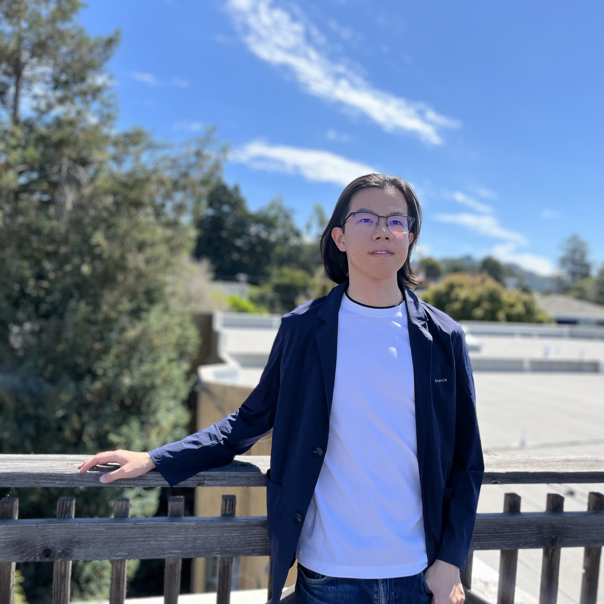

|
Tianshuang (Ethan) Qiu
I am currently a Research Engineer at General Robotics, where I am working on general AI models for robot manipulation.
|
 |
{kind=link}
ResearchI'm interested in computer vision, deep learning, generative AI, and robotics. I also have experience with simulators and sim to real transfer. |

|
Omni-Scan:
Creating Visually-Accurate Digital Twin Object Models
Using a Bimanual Robot with Handoff and Gaussian Splat Merging
Tianshuang Qiu, Zehan Ma, Karim El-Refai, Hiya Shah, Justin Kerr, Chung Min Kim, Ken Goldberg IROS, 2025 project page / arXiv Omni-Scan is a pipeline for producing high-quality 3D Gaussian Splat models using a bi-manual robot that grasps an object with one gripper and rotates the object with respect to a stationary camera. The 3DGS training pipeline is modified to support concatenated datasets with gripper occlusion, producing an omni-directional model of the object. Omni-Scan can perform part defect inspection, identifying visual and geometric defects in different industrial and household objects. |
|
|
Made-ya-look: Using Diffusion Models to Modify Gaze
Alonso Martinez, Tianshuang Qiu, Alexi Efros project page Made-ya-look is a project that uses diffusion models to modify the human gaze in images. The model subtly manipulates the images to make the viewer look at a specific region. |

|
Blox-Net: Generative Design-for-Robot-Assembly using VLM
Supervision, Physics Simulation, and A Robot with Reset
Andrew Goldberg, Kavish Kondap, Tianshuang Qiu , Zehan Ma, Letian Fu, Justin Kerr, Huang Huang, Kaiyuan Chen, Kuan Fang, Ken Goldberg ICRA, 2025 project page / arXiv Blox-Net iteratively prompts a VLM with a simulation in-the-loop to generate designs based on a text prompt using a set of blocks and assembles them with a real robot. The robot can reset the environment to automatically retry failed attempts. |
|
|
Breathless: An 8-hour Performance Contrasting Human and
Robot Expressiveness
Catie Cuan, Tianshuang Qiu, Shreya Ganti, Ken Goldberg ISRR, 2024 project page / arXiv Breathless is a performance that pairs a human dancer (Cuan) with an industrial robot arm for an eight-hour dance that unfolds over the timespan of an American workday. The resulting performance contrasts the expressivity of the human body with the precision of robot machinery. |
|
|
BOMP: Bin Optimized Motion Planning
Zachary Tam, Karthik Dharmarajan, Tianshuang Qiu , Yahav Avigal, Jeffrey Ichnowski, Ken Goldberg IROS, 2024 project page / arXiv A system that uses synthetic depth images to gain an understanding of how to rapidly plan collision free trajectories. This continues the GOMP line of work and extends it to highly complex environments such as bin picking, where the current obstacle configuration is not known and can be the next object to be picked. |
Miscellanea |

|
Course Projects: Computer Vision |
|
Source code taken from Jon Barron's website. |